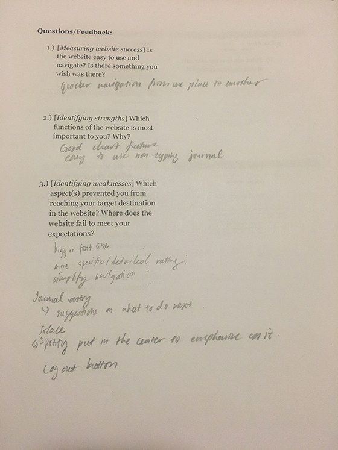
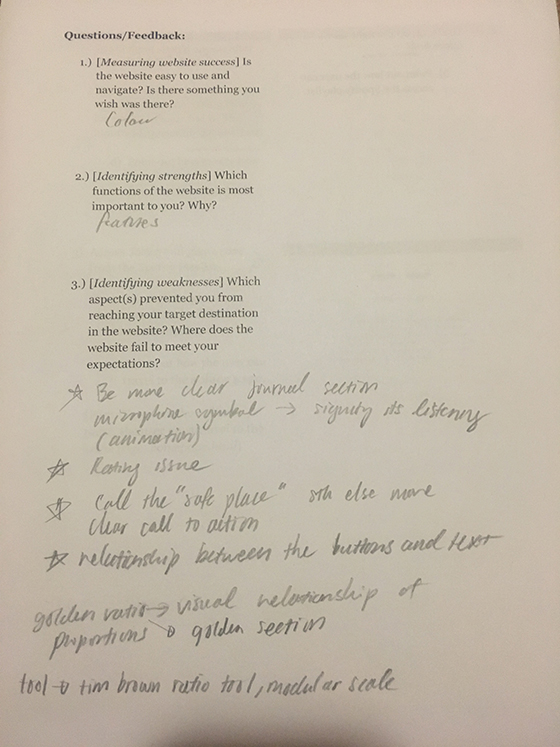
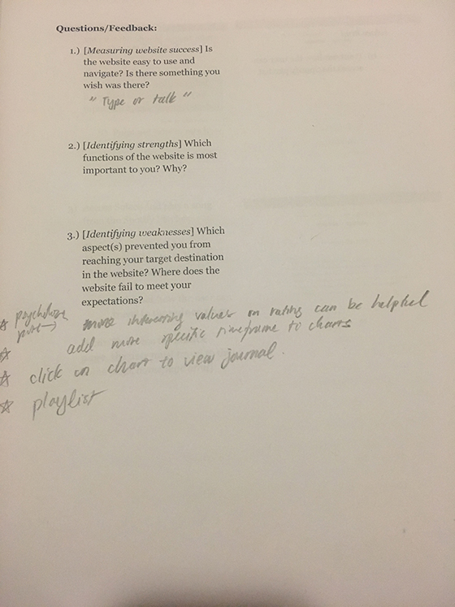
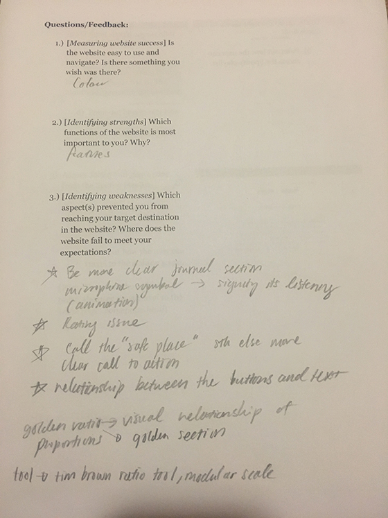
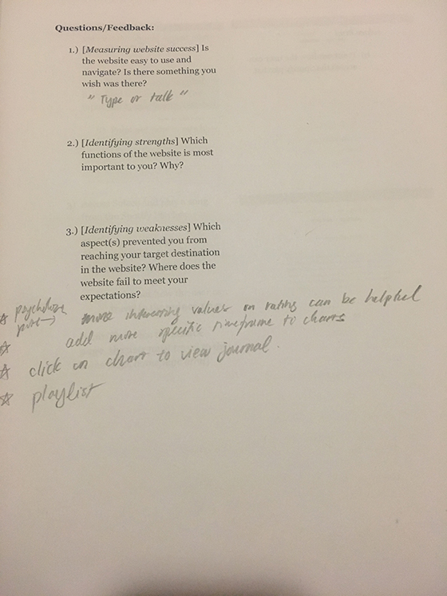

What can be improved:
- 1. Larger font size on certain pages like rating description in journal.html
- 2. Placement of Spotify icon on solace.html should be centered
- 3. Add Logout button
- 4. Mention "talk or type" in journal.html
- 5. Be more clear in journal.html, for example add interactive microphone symbol when data is being taken in
- 6. More specific rating base
- 7. In home.html, "Solace" should be called something else to avoid confusion
- 8. Clearer call to Action
- 9. Relationship between buttons and text should be refined
- 10. Apply Golden Rule theory
What is working:
- 1. Use of speech recognition
- 2. Use of charts
- 3. Effective solution for cause




